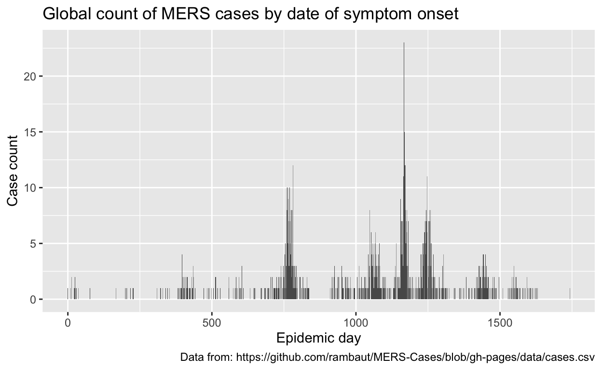

Learning outcomes
Learn the basic template for all
ggplot-ingConvert date format to numeric for ease of plotting
Use structure in the data to automatically color data (points, bars, etc)
Process data on-the-fly for better plots (drop_na, filter, new columns)
Make common plots (bar plots, box plots, scatter plots, histograms)
Add trend lines to plots
Create panels automatically with faceting
Introduction
This is the first in a series of modules that constitute Introduction to Scientific Programming, taught through the IDEAS PhD program at the University of Georgia’s Odum School of Ecology in conjunction with the Center for the Ecology of Infectious Diseases. This module introduces the principles and practice of data visualization with special emphasis on analysis of infectious disease data. Programming is performed in R. Recommended reading for this module is the book R for Data Science by Hadley Wickham and Garret Grolemund (O’Reilly Media, 2017).
Specifically, this module seeks to introduce the student to basic tasks and operations required to visualize data in R using the package ggplot2. Data visualization is a key component of exploratory data analysis. ggplot2 implements the idea that there is a “grammar of graphics” – that is an organizational scheme based on the semantic relationships among different graphical elements. Data visualization theory, practice, and exploratory data analysis are not covered systematically, but rather by example, with the expectation that students will develop further skills by extending the provided examples.
If you’re unfamiliar with ggplot, you may find it helpful to first review the video we’ve included.
Case study
As a running example in this module, we will study a data set on the spread of Middle East Respiratory Syndrome Corona Virus (MERS-CoV) compiled and originally made available by Andrew Rambaut on his Github site (https://github.com/rambaut/MERS-Cases/blob/gh-pages/data/cases.csv). MERS-CoV is a positive-sense single-stranded Betacoronavirus. Its closest relatives are the SARS coronavirus, common-cold coronavirus, and other human betacoronaviruses. MERS-CoV first emerged in Saudi Arabia in 2012. It causes a severe respiratory illness. Transmission to humans may be direct (person-to-person), particularly in hospitals, or from contact with infected animals. Exposure to camels is associated with many cases, although bats, particularly the Egyptian Tomb bat (Taphozous perforatus), are suspected to be the maintenance reservoir. The case fatality rate is around 40%.
Getting the data into R
To load the MERS data into an R session, we will first load a key package tidyverse. This actually loads a suite of packages including ggplot2 and readr, with the latter providing useful functions for reading data into R. We’ll additionally load a package called magrittr which allows us to write R code as workflows passing through ‘pipes’. If interested, you can read more about pipes here: https://r4ds.had.co.nz/pipes.html
library(tidyverse)
library(magrittr)By loading tidyverse we now have the function read_csv available to us. We will use this function to read in the file “cases.csv”, which we will assign to the variable “mers”.
mers <- read_csv("https://raw.githubusercontent.com/awpark/learnR/master/cases.csv")Formatting some dates
We can inspect the data using the base R function head, which displays the first few rows of data. Try doing this for the data frame “mers” that we have just created. If you’re ever unsure how to complete a coding challenge in this module, you can click the “solution” button.
library(tidyverse)
library(magrittr)
mers <- read_csv("https://raw.githubusercontent.com/awpark/learnR/master/cases.csv")head(mers)We can additionally find out what kind of data are stored in a particular column of a data frame using the base function class. Columns are referred to using the $ sign. For example, the column “onset” in the “mers” data frame is referred to by mers$onset. What type of data are stored in the column “onset”.
library(tidyverse)
library(magrittr)
mers <- read_csv("https://raw.githubusercontent.com/awpark/learnR/master/cases.csv")class(mers$onset)We see that the data in this column represent dates. We may also find it useful to have a simple numerical value for the days elapsed since the start of the epidemic. We use the following code, which identifies the earliest onset date then measures time since that date.
# R needs to be told that any NA values are not included in search for minimum otherwise NA is the minimum!
# start with mers; pull the onset2 column; find the min; store in 'day0'
day0 <- mers %>% pull(onset) %>% min(na.rm=T)
# create a new column 'epi.day' which is number of days since "case 0". We use 'as.numeric' so this is just stored as a number.
mers %<>% mutate(epi.day=as.numeric(onset - day0))Making a bar plot
We can explore some of the MERS data using the function ggplot. One plot we might wish to produce is the epidemic curve which is basically a bar plot. We can pass the “mers” dataframe to ggplot to create an empty plot using the command mers %>% ggplot(.), where the “.” signifies whatever just got passed through the pipe (this is useful style if you want to manipulate your data just before plotting, for example to remove NA values or filter to a subset of your data). The epidemic curve is then produced by adding a bar plot using the geom function geom_bar. The last line of our code adds some labels. Run the code to check it works.
mers %>% ggplot(.) +
geom_bar(mapping=aes(x=epi.day)) +
labs(x='Epidemic day', y='Case count', title='Global count of MERS cases by date of symptom onset',
caption="Data from: https://github.com/rambaut/MERS-Cases/blob/gh-pages/data/cases.csv")
Pay attention to the structure of the ggplot code. Note that as we “build” the plot, we end each line with the plus symbol “+” - except the last line! Of course, all these MERS cases are distributed among a number of different countries. We can modify the plot to show this using the using the aesthetic fill.
mers %>% ggplot(.) +
geom_bar(mapping=aes(x=epi.day, fill=country)) +
labs(x='Epidemic day', y='Case count', title='Global count of MERS cases by date of symptom onset',
caption="Data from: https://github.com/rambaut/MERS-Cases/blob/gh-pages/data/cases.csv")We can use this example to produce another plot. At the beginning of the new chunk, add a line that creates a new column called “age2” which will just be the numeric version of age (which is stored as ‘character’ data because some data were entered with uncertainty, e.g. “?60” are as a threshold, e.g. “60+”). Data like these won’t be plotted because they will be converted to NA when we try to make them numeric. Next, make a plot where “age2” is the x-axis and case count is plotted as before. To tidy things up, we’ll put a few steps between naming the data frame and passing it through a pipe to ggplot. Specifically we will (i) use the drop_na function to remove NA values in age and gender columns; (ii) filter data so that only entries with “M” or “F” in the gender column are plotted. You should also update the x, y, and title labels. If you’re not sure how to complete the plot, use the hints buttons.
library(tidyverse)
library(magrittr)
mers <- read_csv("https://raw.githubusercontent.com/awpark/learnR/master/cases.csv")
day0 <- mers %>% pull(onset) %>% min(na.rm=T)
mers %<>% mutate(epi.day=as.numeric(onset - day0))mers %<>% mutate(age2=as.numeric(age))
mers %>% drop_na(age, gender) %>% filter(gender=="M"|gender=="F") %>% ggplot(.) +
geom_bar(mapping=aes(x=age2, fill=gender)) +
labs(x='Age', y='Case count', title='Global count of MERS cases by age and sex',
caption="Data from: https://github.com/rambaut/MERS-Cases/blob/gh-pages/data/cases.csv")mers %<>% mutate(age2=...)mers %<>% mutate(age2=as.numeric(age))mers %<>% mutate(age2=as.numeric(age))
mers %>% drop_na(age, gender) %>% ...mers %<>% mutate(age2=as.numeric(age))
mers %>% drop_na(age, gender) %>% filter(gender=="M"|gender=="F") %>% ...Making histograms
Using ggplot, we’re not restricted to bar plots. In this example we will create a new column called “infectious.period” crudely estimated as the difference between the “hospitalization” date and the symptoms “onset” date.
mers %<>% mutate(infectious.period=hospitalized-onset) # calculate "raw" infectious period
mers %>% ggplot(.) +
geom_histogram(aes(x=infectious.period)) +
labs(x='Infectious period', y='Frequency', title='Distribution of calculated MERS infectious period',
caption="Data from: https://github.com/rambaut/MERS-Cases/blob/gh-pages/data/cases.csv")While the code is correct, we have negative infectious periods! This is because of nosocomial transmission (occurring in a hospital). When a patient is admitted to hospital for a non-MERS reason then later acquires MERS in hospital, their hospitalization date will precede their symptoms onset date. **Copy the histogram plotting code above into the empty code chunk below and add a filter between “mers” and “ggplot” so that we only plot positive infectious period data".
library(tidyverse)
library(magrittr)
mers <- read_csv("https://raw.githubusercontent.com/awpark/learnR/master/cases.csv")
day0 <- mers %>% pull(onset) %>% min(na.rm=T)
mers %<>% mutate(epi.day=as.numeric(onset - day0))
mers %<>% mutate(age2=as.numeric(age))
mers %<>% mutate(infectious.period=hospitalized-onset) mers %>% filter(infectious.period>0) %>% ggplot(.) +
geom_histogram(aes(x=infectious.period)) +
labs(x='Infectious period', y='Frequency', title='Distribution of calculated MERS infectious period',
caption="Data from: https://github.com/rambaut/MERS-Cases/blob/gh-pages/data/cases.csv")Making scatter plots with trend lines
Some pathogens emerging in populations will undergo selection for more efficient transmission. This could, for example, cause the infectious period to change through time. To inspect this, we’ll make another plot. Note that in this example, we’ve put the aesthetics (what goes on x, y axes, how to color data, etc.) with the ggplot function, not with the layer. This is because we’re going to have >1 layer share the same aesthetics.
mers %>% filter(infectious.period>0) %>% ggplot(.,aes(x=epi.day,y=infectious.period)) + geom_point() +
labs(x='Epidemic day', y='Infectious period (days)', title='Calculated MERS infectious period over time',
caption="Data from: https://github.com/rambaut/MERS-Cases/blob/gh-pages/data/cases.csv")Copy the code that made the scatter plot into the empty code chunk below and modify it two ways: (i) add an “and” statement (using the “&” symbol) to the filter function so that we only plot infectious periods (IP) with values 0<IP<50; (ii) add a trend line layer using the geom_smooth function.
library(tidyverse)
library(magrittr)
mers <- read_csv("https://raw.githubusercontent.com/awpark/learnR/master/cases.csv")
day0 <- mers %>% pull(onset) %>% min(na.rm=T)
mers %<>% mutate(epi.day=as.numeric(onset - day0))
mers %<>% mutate(age2=as.numeric(age))
mers %<>% mutate(infectious.period=hospitalized-onset) mers %>% filter(infectious.period>0 & infectious.period<50) %>% ggplot(.,aes(x=epi.day,y=infectious.period)) +
geom_point() +
geom_smooth() +
labs(x='Epidemic day', y='Infectious period (days)', title='Calculated MERS infectious period over time',
caption="Data from: https://github.com/rambaut/MERS-Cases/blob/gh-pages/data/cases.csv")mers %>% filter(infectious.period>0 & infectious.period<50) %>% ...mers %>% filter(infectious.period>0 & infectious.period<50) %>% ggplot(.,aes(x=epi.day,y=infectious.period)) +
geom_point() +
geom_smooth() + ...Faceting
We’ve already seen how we can use colors to express more detail in our data. However, sometimes it’s clearer to display structured data in separate panels. We can use faceting to achieve this very easily with ggplot.
mers %>% filter(infectious.period>0 & infectious.period<50 & country %in% c("Jordan","KSA","Qatar","UAE")) %>% ggplot(.,aes(x=epi.day,y=infectious.period)) +
geom_point()+geom_smooth()+facet_wrap(~country) +
labs(x='Epidemic day', y='Infectious period (days)', title='Calculated MERS infectious period over time',
caption="Data from: https://github.com/rambaut/MERS-Cases/blob/gh-pages/data/cases.csv")Using the example above as a guide, create a new plot that inspects the age (remember the numeric column is “age2”) of patients whose infection is either “clinical”, “subclinical”, or “fatal” (column=“clinical”, and you’ll have to filter to only the 3 outcomes listed). For each of the three outcomes, visualize ages as a boxplot (“geom_boxplot()”) and use faceting to show separate panels for every country (14 countries in total). While this sounds complex, you’ll see this can all be achieved in one line of code. Good luck!
library(tidyverse)
library(magrittr)
mers <- read_csv("https://raw.githubusercontent.com/awpark/learnR/master/cases.csv")
day0 <- mers %>% pull(onset) %>% min(na.rm=T)
mers %<>% mutate(epi.day=as.numeric(onset - day0))
mers %<>% mutate(age2=as.numeric(age))
mers %<>% mutate(infectious.period=hospitalized-onset) mers %>% filter(clinical %in% c("clinical","subclinical","fatal")) %>% ggplot(.,aes(x=clinical,y=age2)) +
geom_boxplot() +
facet_wrap(~country)mers %>% filter(clinical %in% c("clinical","subclinical","fatal")) %>% ...mers %>% filter(clinical %in% c("clinical","subclinical","fatal")) %>% ggplot(.,aes(x=clinical,y=age2)) + ...